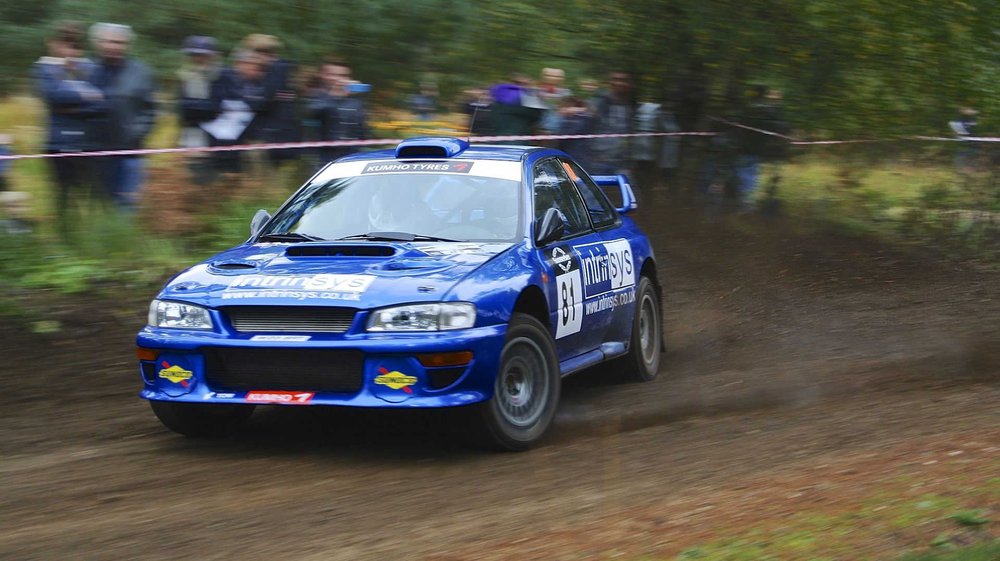
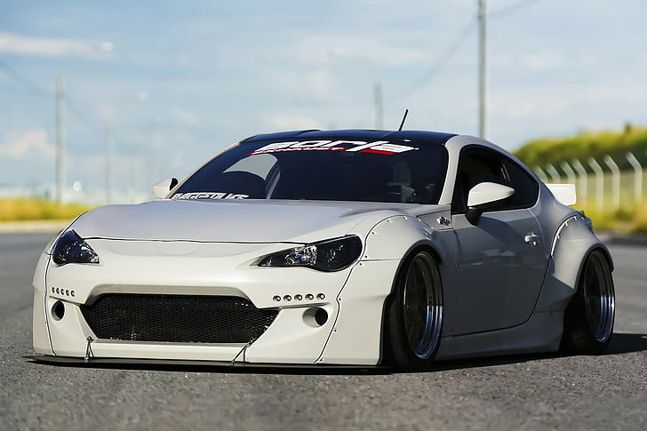

Subaru Impreza WRX STI
История данной модели начинается в далёком 1992 году, когда на замену Subaru Legacy в ралли пришла Impreza. Сначала был заключен договор с компанией ProDrive на модернизацию и обслуживание. Первое поколение автомобилей, которые выступают на ралли. Затем, спустя два года был представлен седан от STI, который имел более яркую спортивную направленность, в том числе двигатель EJ207 280 л.с. усиленную подвеску, тормозную систему и ещё много разнообразных улучшений. Этот автомобиль приняли на вооружение Subaru World Rally Team. Первоначально они выпускались для двух рынков, для японского и европейского, однако потом карта продаж сильно увеличилась. Также в первом поколении было выпущено огромное множество различных «специальных версий», например Race Altered. Type-RA имели небывалые для Subaru показатели, но были выпущены ограниченным тиражом, что не позволяло всем желающим опробовать этот автомобиль. Было также огромное количество специальных версий в Японии и Европе. Их выпуск был приурочен к важным датам и триумфальным победам в WRC. Например, McRae, 555, Catalunya, Terzo, RB5, P1, и 22B. В 1997—1998 годах был произведён рестайлинг первого поколения, в основном они коснулись внешних изменений и изменений салона. С американскими выпусками дело обстояло несколько иначе: до 1998 года в Америке были представлены только версии с двигателем 1.8 и 2.2 литра с передним или полным приводом, а в 1998 году была представлена Subaru Impreza WRX STI 2.5RS с атмосферным двигателем 165 л.с., увеличенными тормозными дисками от Legacy а также воздуховоды на капоте и высокий задний спойлер.
Subaru BRZ
Subaru BRZ — компактный спортивный заднеприводный спорткар в кузове двухдверного купе, разработанное и производимое совместно компаниями Subaru и Toyota, официально представлено в декабре 2011 года на Токийском автосалоне. BRZ это аббревиатура Boxer, Rear Wheel Drive, Zenith. Модель продаётся под тремя разными брендами: Toyota (Toyota 86 в Японии, Австралии, Северной Америке и Северной Африке, Toyota GT-86 в Европе, Toyota FT-86 в Никарагуа и Ямайке), Subaru (Subaru BRZ) и Scion (Scion FR-S).  Развитие кода 086A этого автомобиля и его основного названия 86 (произносится как восемь-шесть или хати-року (яп. ハチロク), но чаще произносится как восемьдесят шесть) или GT86, отсылает к историческим спортивным купе и хэтчбекам Toyota с передним расположением двигателя и задним приводом, а именно: 2000GT 1967 года (японское спортивное купе с 2-литровым двигателем); AE86 1983—1987 годов (славится своей управляемостью и показателями в дрифте). Toyota также ссылается на свой первый спортивный автомобиль, Sports 800, учитывая, что оба этих автомобиля имеют оппозитный двигатель, как широко используемый партнёром по проекту и производителем 86, Subaru.